Artista plástico y digital en San Luis Potosí
YairArtz
Creador de Koatl el Defensor y autor de cómic
Desde 2014 construyo un universo de superhéroes con raíces mesoamericanas que ya salió de la viñeta: cómic, videojuego en Steam, juego de cartas coleccionables y figuras de edición limitada.
He participado como expositor y/o conferencista en:
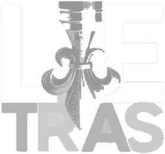
Un universo que empezó en 24 páginas
Koatl debutó en junio de 2014 como un cómic autopublicado y financiado por su autor. Hoy es una franquicia independiente que cruza formatos sin perder su origen huasteco.
Koatl el Defensor
El campeón elegido por Quetzalcóatl, oculto tras el rostro de Julián, un chico tének. Doce años de historia en cómic.
Leer su historiaKoatl The Defender ULTIMATE
La nueva versión del videojuego llega a Steam. Ya puedes jugar la demo.
Ver el juego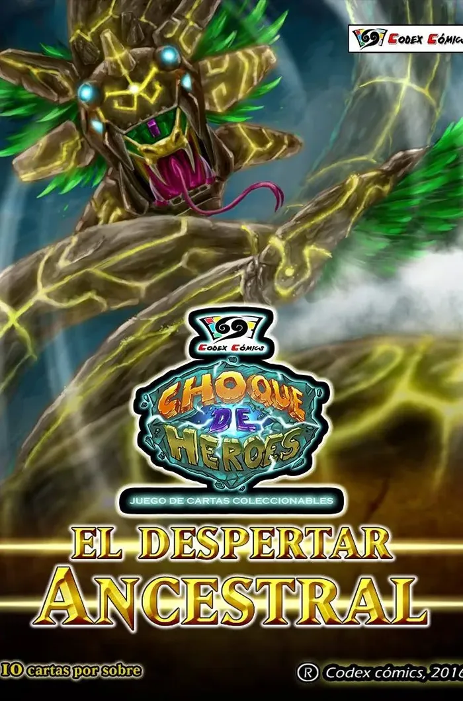
Choque de Héroes
El TCG mexicano con más de 700 cartas de héroes del cómic independiente, ahora también en app.
Entrar a la arena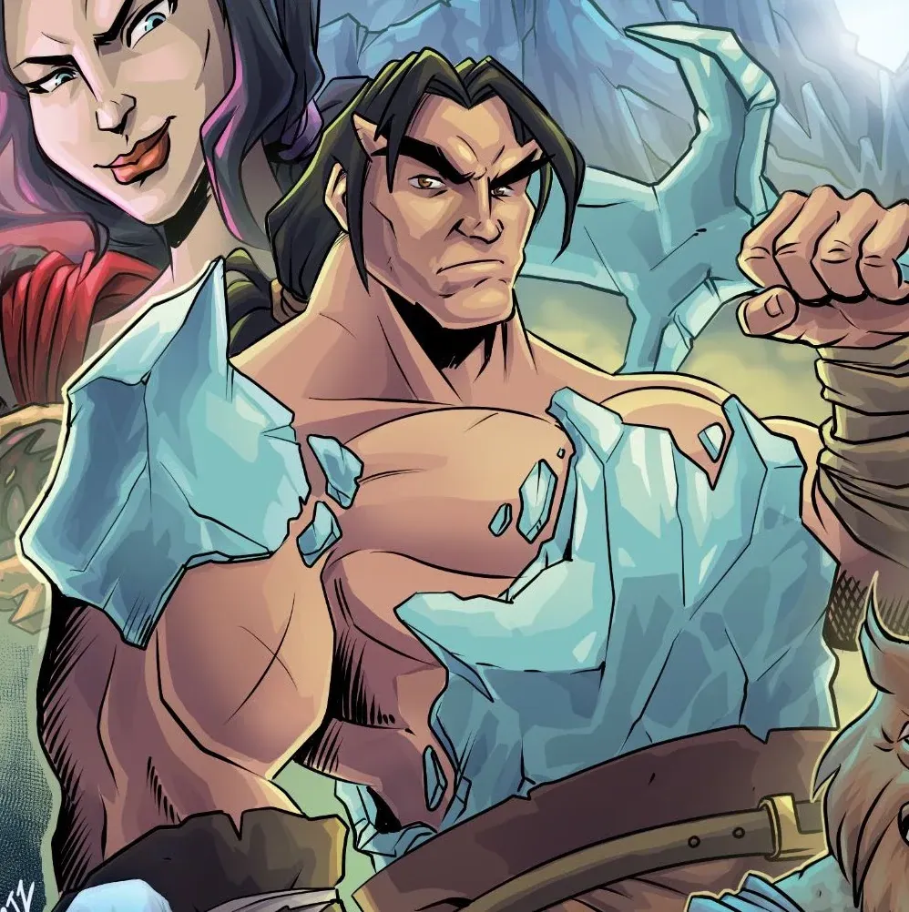
Más cómics
El Caballero de Cristal, PokeMX y Az-Tek-Oh!, otros mundos del multiverso.
Explorar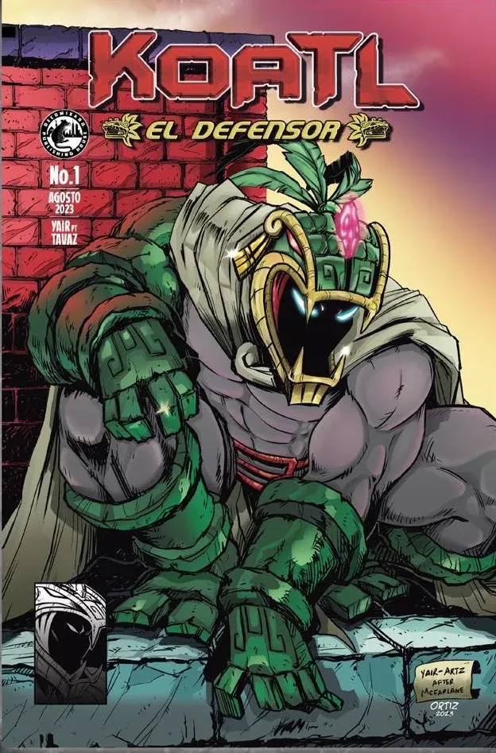
Edición Decomixado
Koatl #1 en edición de lujo para coleccionistas, con portadas foil y folio único.
Ver la edición2026 en mi Universo
Lo que ha pasado este año, del cómic al videojuego y al juego de cartas.
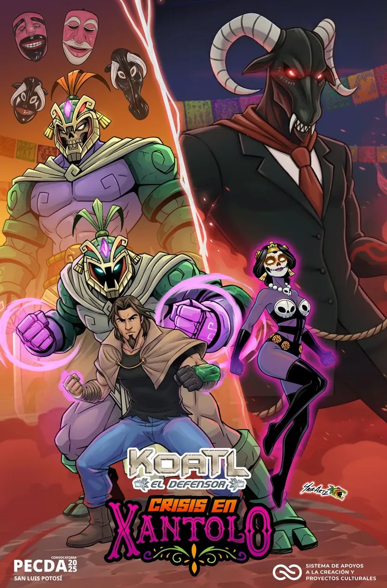
Crisis en XantoloKoatl llega a la Huasteca en un cómic de unas 60 páginas, presentado en la Feria Nacional del Libro de la UASLP.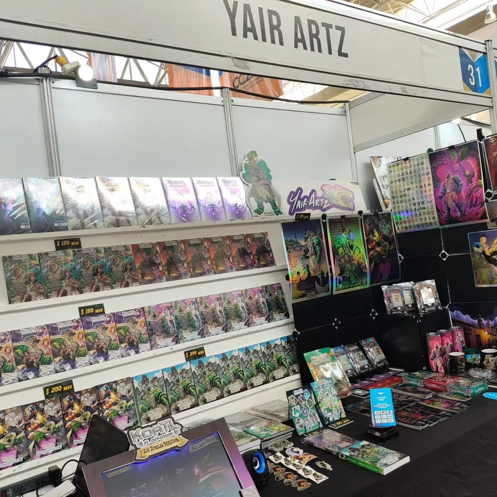
Stand en la 50 Feria Nacional del Libro UASLPDiez días con lectores, dedicatorias y toda la colección de Koatl.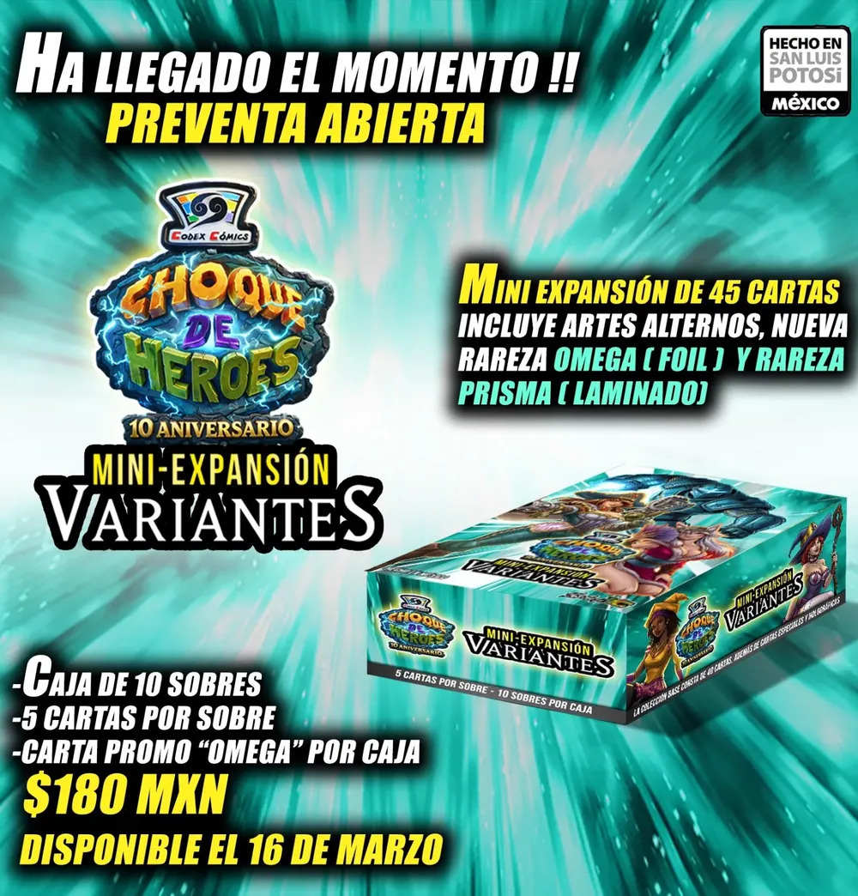
Choque de Héroes regresa con Variantes45 cartas y dos rarezas nuevas, Omega y Prisma, además de cuatro barajas de inicio.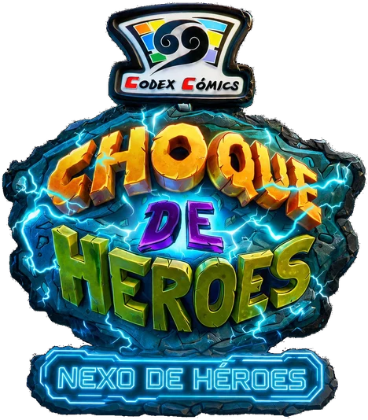
Nexo de Héroes y el registro oficial de jugadoresLa app oficial del TCG suma ID para torneos, ranking, tiendas oficiales y Hero Pesos.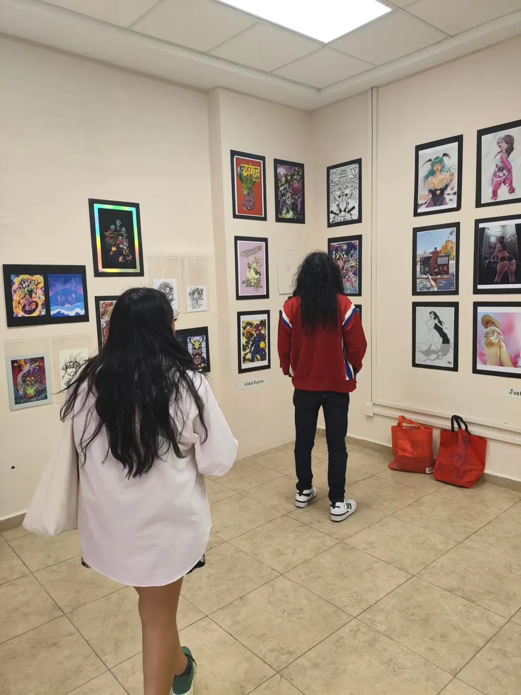
Exposición con el Colectivo MoneroIlustración en FELEAL 2026, San Luis Potosí, con homenaje a la caricatura y la historieta potosinas.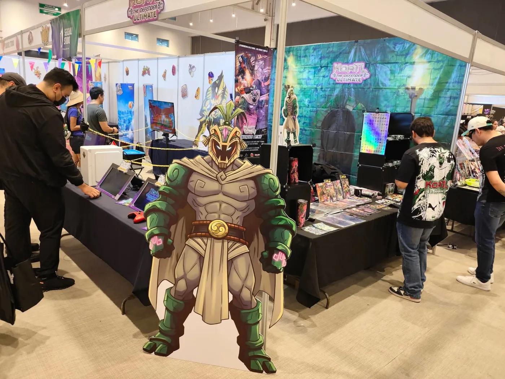
Koatl en Rhinocon, QuerétaroStand con Choque de Héroes, los cómics y la demo de Koatl The Defender ULTIMATE.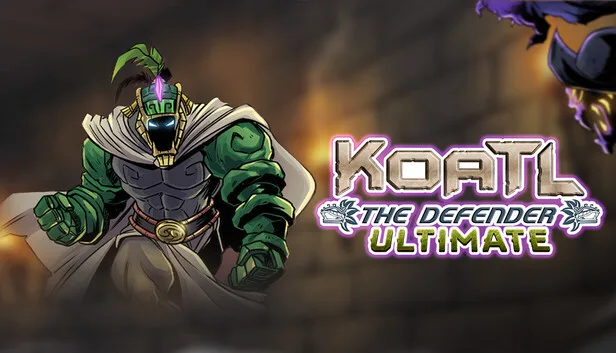
Demo de Koatl The Defender ULTIMATEEn el Steam Next Fest: el Túnel 1 completo y el primer jefe, gratis.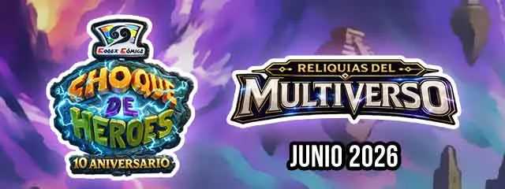
Reliquias del Multiverso120 cartas, la rareza CODEX y el arquetipo Nexotlan.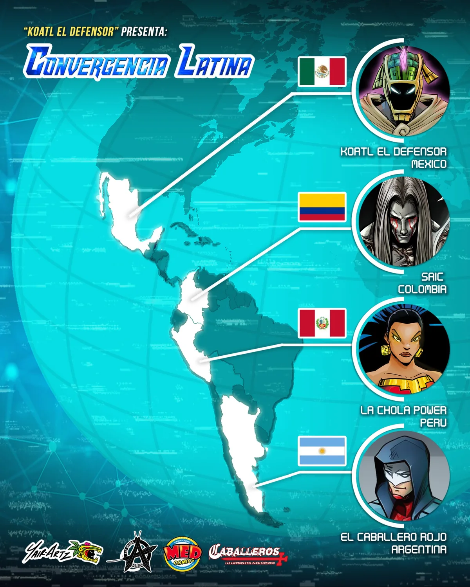
Convergencia LatinaKoatl, La Chola Power, Saic y el Caballero Rojo inauguran un universo compartido con creadores de cinco países.
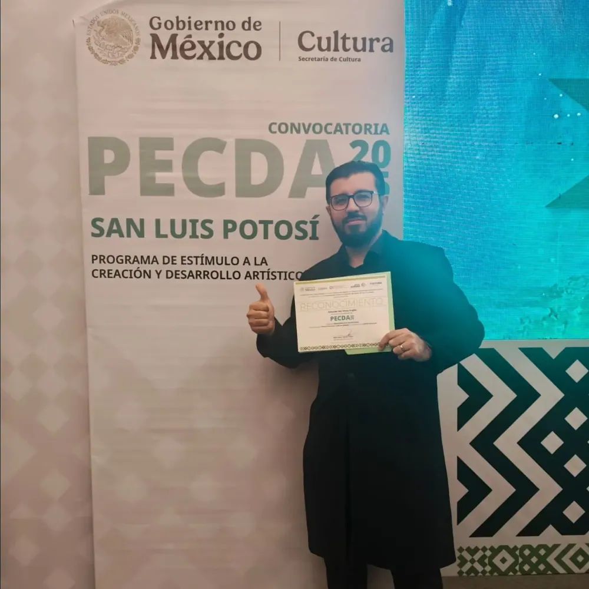
PECDA 2025, narrativa gráficaMi primer premio como artista de cómic
Gané el Programa de Estímulo a la Creación y Desarrollo Artístico (PECDA) 2025 en la disciplina de narrativa gráfica, categoría “creador con trayectoria”.
Es una categoría que exige comprobar al menos diez años de trayectoria continua, y llega en mi disciplina favorita. Koatl obtiene así un nuevo respaldo, ahora de Cultura federal.
Gracias a quienes siguen mi trabajo, muchos desde el inicio, a quienes leen a Koatl y a quienes han adquirido sus productos con los años. Por ustedes el proyecto sigue creciendo.
Conoce mi trayectoriaKoatl en los medios
Más de una década de notas, reportajes y entrevistas sobre Koatl, el cómic independiente y el videojuego.
- La Jornada
- El Universal
- El Sol de San Luis
- Código San Luis
- Metrópoli San Luis
- Plano Informativo
- Game Effect
- Alcantarilla
- TV Azteca
- N+
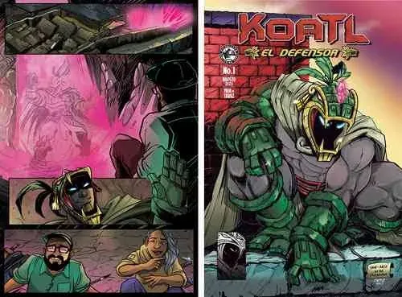
La Jornada, agosto 2023“Yair Artz: en México no hay una industria del cómic”Entrevista sobre la edición de lujo de Koatl el Defensor y el reto de publicar cómic independiente en México.- Alcantarilla, marzo 2026Koatl, el defensor: el superhéroe potosino que luchó contra el olvido
- El Universal San Luis, marzo 2026Presentan cómic sobre la magia del Xantolo en la Feria Nacional del Libro
- El Universal San Luis, marzo 2026“Koatl”, el superhéroe de Yair Artz, llega a la Feria del Libro de la UASLP
- Plano Informativo, noviembre 2024Koatl el Defensor deslumbra en el Festival Internacional Letras
- La Jornada, marzo 2022El cómic Koatl el Defensor prepara su debut en videojuego
- El Universal San Luis, 2019“Koatl el Defensor”, un superhéroe potosino
Entrevistas en video
Yair Pérez Trujillo creó un superhéroe mexicano con raíces indígenas (Netnoticias)
El arte del cómic, Pokémon y Koatl: podcast El Trazado #9
Videojuego independiente con personajes de cómics mexicanos (N+ Fractal)
Un superhéroe en la Huasteca Potosina (Rompeviento TV)
“Koatl el Defensor”, un superhéroe potosino (El Universal San Luis)
Un videojuego inédito y 100 % potosino (El Coliseo Noticias)


¿Tienes la gran idea, pero dibujar no es lo tuyo?
Doy forma a personajes, mascotas de marca, mundos y cómics completos. Llevo años convirtiendo ideas en productos físicos: libros, cartas, figuras y videojuegos.
- Diseño de personajes
- Mascotas para negocios
- Concept art
- Cómic por encargo
- Ilustración para cartas
- Assets para videojuegos